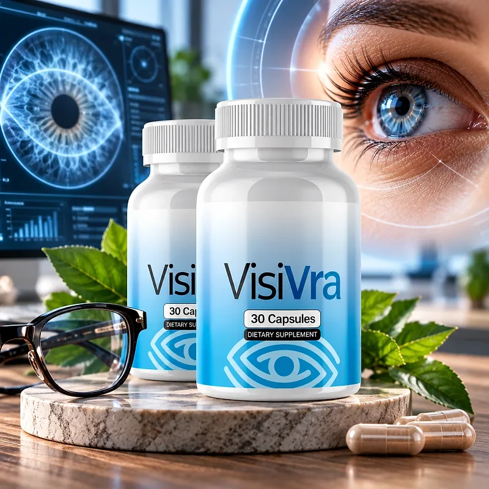
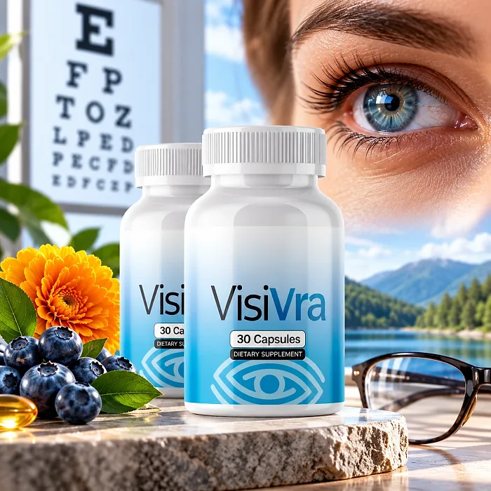
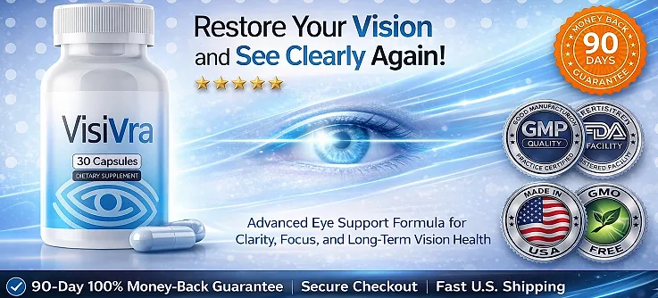

What Is VisiVra And How Does It Work?
VisiVra is a dietary supplement in capsule form designed to support visual clarity, retinal health, and eye comfort for adults who want to address the eye strain, glare sensitivity, and tired eyes that can build up with age, screens, and long workdays through a natural, dependable approach — without complicated routines or temporary quick fixes.
It utilizes a simple daily capsule that combines Lutein, Zeaxanthin, Bilberry Extract, Astaxanthin, Zinc, and Vitamin A to support the retina, antioxidant defenses, and healthy circulation in the eyes, helping the body maintain its natural balance throughout the day.
The ingredients in VisiVra are carotenoids, a berry extract, a mineral, and a vitamin that, according to the official website, form "The Ocular Support & Visual Clarity Matrix", particularly for adults who prefer one simple capsule a day over multiple products or complicated plans.
Rather than acting as a short-lived fix like eye drops, VisiVra focuses on optimized ocular nutrition and reduced oxidative stress, as the official website explains, working gradually alongside regular eye exams, screen breaks, and good lighting.
With consistent daily use, a formula of this kind is intended to help with less eye fatigue, more comfortable focus, and better tolerance to bright light and screens, especially when combined with a diet rich in leafy greens, enough sleep, and sunglasses outdoors.
From a practical standpoint, VisiVra is a daily eye health capsule designed to support wellness from within — helping you see comfortably, stay active, and remain in control of your health.
Described by the official website as made with well-known, carefully selected ingredients that are generally well tolerated when used as directed, VisiVra is designed for regular daily use, focusing on safety, purity, and quality for those seeking a natural, non-prescription route to eye wellness.
VisiVra Ingredients
The official website names the six key ingredients of VisiVra, chosen to support visual clarity, the retina, and eye comfort as part of a consistent daily routine:
Lutein: A carotenoid concentrated in the macula that helps filter blue light and supports visual clarity.
Zeaxanthin: Lutein's partner in the macula, known as a natural "internal sunglasses" nutrient.
Bilberry Extract: A berry rich in anthocyanins, traditionally used to support night vision and eye comfort.
Astaxanthin: A red carotenoid antioxidant that helps the eyes adapt to daily strain.
Zinc: A mineral that helps transport vitamin A to the retina.
Vitamin A: A vitamin essential for low-light vision and a healthy eye surface.
Together, these ingredients are designed to support retinal function, antioxidant defenses, and comfortable vision from within. The official website does not publish the Supplement Facts panel with the amount of each ingredient, so the bottle label is the reference to check.
VisiVra is designed for daily use, offering a natural, non-prescription approach to supporting eye wellness, without stimulants or complicated routines.
VisiVra Side Effects
VisiVra is generally considered well tolerated and is designed for adults of different ages and lifestyles who are looking for a safe, natural, and balanced approach to eye wellness, especially those who prefer an easy daily capsule to support clarity, comfort, and focus without resorting to risky solutions with severe side effects.
The official website says the formula is designed with well-known, carefully selected ingredients and, when used as directed, is generally well tolerated, making it a gentle option for daily use, reinforcing consistency, safety, and reliability.
With no widespread reports of serious side effects, VisiVra is generally considered a well-tolerated option. A few points deserve attention: vitamin A can build up in the body, so people who already take a multivitamin or another eye supplement should check the total amount, and high doses are not recommended during pregnancy; bilberry may add to the effect of blood thinners; and smokers should avoid high-dose beta carotene supplements. Sudden vision changes, eye pain, or flashes of light need prompt evaluation by an eye doctor. It is not intended to diagnose, treat, cure, or prevent any disease, and individual results may vary.
Pregnant or nursing women, people under 18, and anyone with a medical condition or taking prescription medication should consult a physician before using VisiVra, as the official website also recommends, ensuring it fits safely within their personal wellness plan, and should keep their regular eye exams.
VisiVra Dosage
Each bottle of VisiVra contains 30 capsules, and the official website describes each bottle as a 30-day supply, which points to one capsule a day. The official website does not publish the suggested use, so the directions printed on the label are the reference to follow.
Formulated as an easy daily capsule, it requires no powders to mix and nothing to measure. Taking it with the same meal each day, for example breakfast, makes the routine easy to remember, and the fat in a meal helps absorb carotenoids such as lutein, zeaxanthin, and astaxanthin.
For best results, consistency is key. Eye health support builds gradually, so many people make it part of an ongoing routine, and the official packages cover 60, 90, or 180 days.
There is no need for complex schedules or multi-step routines. One simple daily capsule is designed to build support gradually alongside the 20-20-20 screen rule (every 20 minutes, look 20 feet away for 20 seconds), good lighting, and a diet rich in leafy greens and colorful vegetables.
As with any dietary supplement, it's important not to exceed the recommended dose and to check the label on your bottle. VisiVra works best when used regularly, combined with proper hydration, balanced nutrition, and healthy daily habits.
VisiVra – Refund Policy
You can order VisiVra with confidence, knowing that every order is backed by a 60-day money-back guarantee, according to the official policy. This allows you to try the formula and decide if it delivers the support you expect.
According to the return policy on the official website, you have 60 days from the date of purchase to request a refund. Contact the support team for return instructions before sending your package, and return all the bottles, whether empty or not, together with the packing slip. The customer pays the return shipping, which is not refundable.
How the refund process works: After contacting support, send all the bottles to RedRock Fulfillment, PO Box 12730, Ogden, UT 84412, with a note containing your full name, email address, and order ID. Once the package is received and inspected, the refund is processed to your original payment method, and you receive an email confirmation.
Customer Support Contact Information: support@tryvisivra.com or +1 (323) 379-2767, as listed on the contact page of the official website. Order questions can also be sent to BuyGoods, the retailer.
Refund Processing Time: According to the policy, depending on your bank or card provider, it may take 5 to 10 business days for the refund to appear on your statement.
This refund policy is designed to give customers a clear and transparent experience when trying VisiVra.
VisiVra – Where To Buy
VisiVra is sold through its official website, so if you decide to try it, it's important to be careful about where you purchase it. The official website is the only sales channel the manufacturer lists, and it does not point to marketplaces such as Amazon, eBay, or Walmart.
Listings on third-party platforms may look similar but cannot be verified as authentic, raising concerns about safety, quality, and freshness. Products purchased outside the official source may not be covered by the 60-day money-back guarantee.
For this reason, it makes sense to purchase VisiVra only through the official website. Buying directly from the official source ensures you receive the authentic original product, made in the USA, with access to customer support and the full guarantee. According to the official website, every order is a one-time payment with no subscription or hidden charges, and orders are processed by BuyGoods, the retailer named on the site.
To avoid counterfeit batches and ensure maximum quality, always verify that you are ordering from the official VisiVra website before completing your purchase.
To ensure you’re getting the authentic product, most users choose to visit the official website.
Is VisiVra A Scam?
Based on what the official website discloses, VisiVra does not appear to be a scam. It is a real capsule supplement, sold through an established retailer (BuyGoods), and formulated to support visual clarity, retinal health, and eye comfort as part of a consistent routine.
The ingredients used in VisiVra — Lutein, Zeaxanthin, Bilberry Extract, Astaxanthin, Zinc, and Vitamin A — are among the best-known nutrients in eye health research, and the official website describes how they work together.
In addition to its formula, VisiVra lists a support email and phone number and a return address for its fulfillment center in Ogden, Utah, with a focus on clarity and simple returns.
The official website publishes no written customer testimonials, so this review does not quote any. A fair point of criticism is that the order page is written as a "review page" by the seller itself, it does not publish the Supplement Facts panel or the suggested use, and a banner promises to "restore your vision", which no supplement can guarantee. Results vary from person to person, and no supplement replaces glasses, prescribed treatment, or regular visits to an eye doctor.
VisiVra is backed by a 60-day money-back guarantee, and the return steps and the return address are published on the official website, which gives customers a clear path if the product does not meet their expectations.
If you're looking for a simple daily capsule to support clear, comfortable vision without complicated routines, VisiVra is worth considering — especially when purchased directly from the official website.
For those who want to verify product details or check current availability, the official VisiVra website remains the safest option.

Check Availability On Official Website
